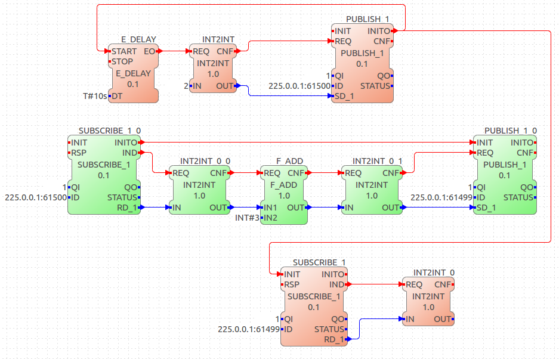
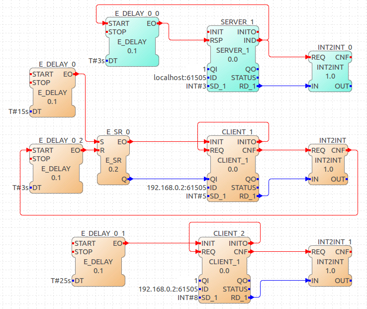

address:port
FBDK/IP
This section will show you how to make applications communicate using the default FBDK/ip protocol as defined in the IEC 61499 Compliance Profile for Feasibility Demonstrations. Because we are going to use the default protocol, we don’t have to put it as a parameter in the beginning of the ID input of the Communication Function Blocks. We only have to provide an IP address and port in the following format:
So an ID like:
192.168.0.2:61499
will be automatically converted into this:
fbdk[].ip[192.168.0.2:61499]
Publish/Subscribe - UDP/IP
To communicate using Publish/Subscribe FBs, a UDP/IP connection is utilized, so we have to provide the Publish/Subscribe Function Blocks with a multicast IP address and a port. The Publish FBs will send data over the network in this multicast IP address/port and the Subscribe FBs will listen to the same multicast IP address/port receiving any data sent by the Publish FBs. Multicast IP addresses can be picked from the range 224.0.0.0 - 239.255.255.255, while the port is arbitrary. So an example ID parameter for the Publish/Subscribe FBs would be:
225.0.0.1:61499
In contrast to Client/Server pairs (see next section), Publish/Subscribe FBs don’t have to work in pairs. Any Subscribe FB in any device listening to this multicast IP address will receive data sent by any Publish FB in this multicast IP address.
An example of using a Publish/Subscribe FBs can be seen in the figure below and can be summarized as follows:
-
After a delay of 10 seconds, integer 2 is sent over UDP on the multicast IP address 225.0.0.1 and port 61500 by the first device (red).
-
The second device (green) receives the integer by listening to the same multicast IP address.
-
The second device increases the received integer by 3.
-
The second device sends the result over UDP on the multicast IP address 225.0.0.1 and port 61499.
-
The first device receives the result by listening to the same multicast IP address.
|
Note
|
|

Client/Server - TCP/IP
To communicate using a Client/Server pair, a TCP/IP connection is utilized, so we have to set a Server in one device listening to a certain port and have a Client in another device connect to this Server using the first device’s IP address and Server’s listening port. The Client FB will send a request to the Server FB using the Server FB’s IP address and port and the Server FB will respond after processing the received data. So if the Server is running in a device with IP address 192.168.0.2 listening to port 61501, an example of the ID parameters used for the Client/Server pair would be:
| Server | Client |
|---|---|
|
|
However the "localhost" attribute is just for informational reasons and will not be used by 4diac FORTE, i.e. the Server’s IP address will always be the same as the device’s IP address. Only the port attribute is used. In contrast to Publish/Subscribe FBs, Client/Server FBs work in pairs. Only one Client FB can be connected to a Server FB at a time, while a Client FB can be connected to only one Server FB.
An example of using a Client/Server pair can be seen in the figure below and can be summarized as follows:
-
After a delay of 15 seconds the CLIENT_1 FB in the first device (orange) is initialized.
-
A request is send to the second device (teal), using the second device’s IP address (192.168.0.2) and port 61505 used by SERVER_1 FB.
-
The second device receives integer 5.
-
After a delay of 3 seconds the second device sends a response back to the first device.
-
The first device receives integer 3 in CLIENT_1 FB.
-
After a delay of 3 seconds the CLIENT_1 FB in the first device is terminated.
-
After 25 seconds from the start the CLIENT_2 FB in the first device is initialized.
-
A request is send to the second device, using the same IP address and port as before.
-
The second device receives integer 8.
-
After a delay of 3 seconds the second device sends a response back to the first device.
-
The first device receives integer 3 in CLIENT_2 FB.
|
Note
|
|

Where to go from here?
-
Go back to Protocols index:
Communication Index -
If you want to go back to the Start Here page, we leave you here a fast access
Start Here page
Or Go to top